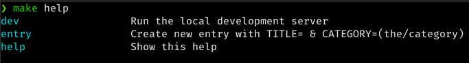

Hugo Makefile
by Aaron Crowder on in personal projects
In doing research on themes for this blog, I stumbled across one called Neofeed that had a really interesting Makefile. I was really intrigued by the idea of being able to run a command to start a new post or run the hugo dev server.
However, my needs where a bit different from the author of Neofeed. I modified their Makefile to suit, and I’m excited to write this post about the result!
Setup
First things first, we need to do some setup for our targets. We’ll use these things later on:
SHELL := /bin/bash
DATEOF:=$(shell date +%FT%T)
SPACE:=$(subst ,, )
COMMA:=,
We need the SHELL to run some shell commands. DATEOF, SPACE, and COMMA
are all used in the entry target.
DATEOF: used for the date in the frontmatter.SPACE: used to string substitute spaces in theTITLE(more on that later)COMMA: used as part of a string substitution for the categories
Targets
help

This target allows my makefile to be self-documenting. Calling make help
will output a list of all the targets (including help) along with the comment
for each one.
entry
entry: ## Create new entry with TITLE= & CATEGORY=(the/category)
$(eval POST_PATH:=content/posts/$(CATEGORY)/$(subst $(SPACE),-,$(TITLE)))
$(shell mkdir -p $(POST_PATH))
@printf '%b\n' "---\ntitle: $(TITLE) \ndate: $(DATEOF) \ncategories: [\"$(subst /,\"$(COMMA)\",$(CATEGORY))\"] \ntags: \n---\n\n" > $(POST_PATH)/index.md
The entry target creates a new blog entry. It requires two parameters,
TITLE and CATEGORY.
TITLE: The title of your new entryCATEGORY: A path for the categories
The CATEGORY path will be split on the slash into an array of categories. It
will also be used, in combination with the title, to create a new directory for
the entry. Once the directory is created a file called index.md is created
inside of it with frontmatter including the title, date, categories, and tags.
dev
dev: ## Run the local development server
hugo server -D --disableFastRender --environment development
The dev target is simple. It starts up the hugo dev server with a few
arguments. As you can imagine, its a lot easier to type make dev than that
long command.